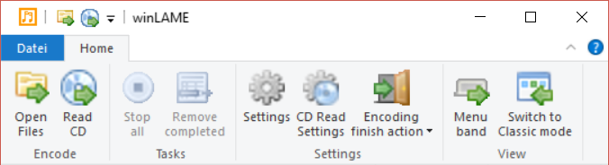
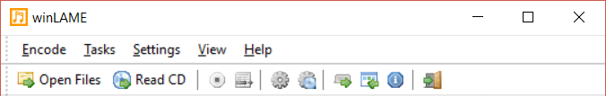
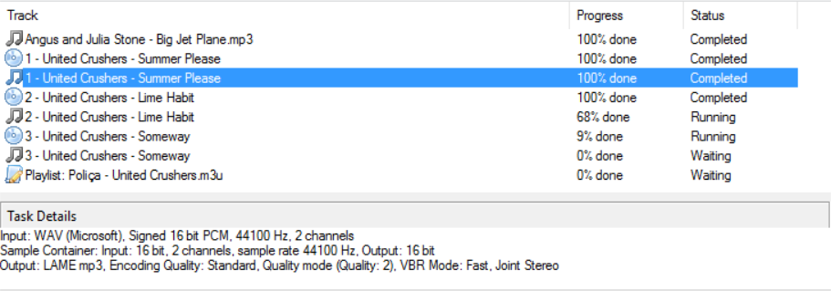

winLAME Modern User Interface
The Modern User Interface uses a main window that shows the currently running tasks. It
lets you start new Encoding and CD Audio Extraction tasks while previous tasks still run.
This way the full power of today's modern multi core CPUs can be used.
Menu band / ribbon

The main window uses a menu band (also called ribbon) known from modern Office and other
applications to show possible actions.
Toolbar + Menu

You can also switch to a toolbar + menu mode that uses toolbars and menus to select actions.
This mode is also used on Windows XP, since it doesn't support the menu band user
interface.
Tasks List

The tasks list shows all currently running, queued or finished tasks. The icon of the task
indicates the task type. Clicking on a single task shows details about this task in the
task details window.
Commands
The following commands are available in the menu band and in the toolbar / menu mode.
Open Files
Starts the wizard pages used to encode files. The first wizard page is the
Input Files page.
Read CD
Starts the wizard pages used to read out CD Audio tracks. The first wizard page is the
Input CD page.
Stop all
Stops all running tasks. All temporary output files are removed again. The tasks are
not cleared from the tasks list.
Remove completed
Removes completed tasks from the tasks list, in order to clean up the tasks that are
no longer relevant.
Settings
Shows the general settings page to change settings.
CD Read Settings
Shows the settings page for CD Read functions.
Encoding finish action
This drop-down button lets you choose which action is carried out when all encoding
and CD Audio extraction tasks are finished. The following options are available:
| Action | Description |
|---|
| Do nothing | Does nothing when finished |
| Close winLAME | Closes winLAME when finished |
| Standby PC | Suspends the system to RAM and powers down |
Menu band
Changes from menu band mode to toolbar + menu mode and back.
Switch to Classic mode
Switches back to
Classic UI mode. Note that you can
always switch back to Modern UI mode using the system menu in Classic UI mode.
Button
The button starts the help, which you are currently viewing.
back to Wizard Pages